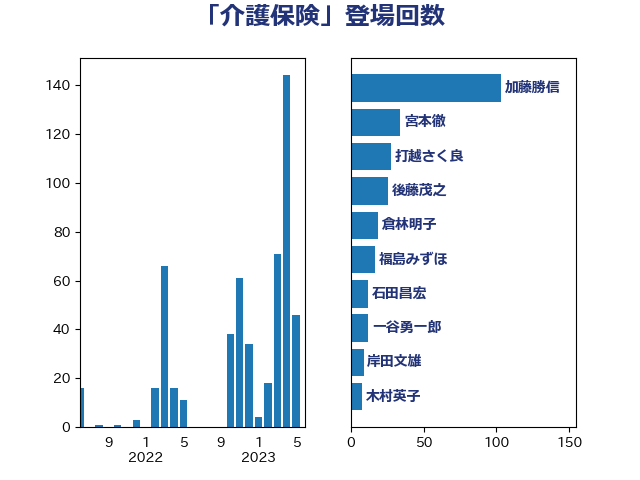

単語「介護保険」

| 加藤勝信 | 自由民主党 | 103 回 |
| 宮本徹 | 日本共産党 | 34 回 |
| 打越さく良 | 立憲民主党 | 28 回 |
| 後藤茂之 | 自由民主党 | 26 回 |
| 倉林明子 | 日本共産党 | 19 回 |
| 福島みずほ | 社会民主党 | 17 回 |
| 石田昌宏 | 自由民主党 | 12 回 |
| 一谷勇一郎 | 日本維新の会 | 12 回 |
| 岸田文雄 | 自由民主党 | 9 回 |
| 木村英子 | れいわ新選組 | 8 回 |
| 石橋通宏 | 立憲民主党 | 7 回 |
| 上田勇 | 公明党 | 7 回 |
| 野間健 | 立憲民主党 | 6 回 |
| 芳賀道也 | 国民民主党 | 6 回 |
| 川田龍平 | 立憲民主党 | 6 回 |
| 西銘恒三郎 | 自由民主党 | 5 回 |
| 東徹 | 日本維新の会 | 5 回 |
| 古屋範子 | 公明党 | 5 回 |
| 中島克仁 | 立憲民主党 | 5 回 |
| 阿部知子 | 立憲民主党 | 4 回 |
| 梅村聡 | 日本維新の会 | 4 回 |
| 山本香苗 | 公明党 | 4 回 |
| 山井和則 | 立憲民主党 | 4 回 |
| 仁木博文 | 無所属 | 4 回 |
| 櫛渕万里 | れいわ新選組 | 3 回 |
| 川崎ひでと | 自由民主党 | 3 回 |
| 岩渕友 | 日本共産党 | 3 回 |
| 長友慎治 | 国民民主党 | 2 回 |
| 若松謙維 | 公明党 | 2 回 |
| 石井啓一 | 公明党 | 2 回 |
| 田村憲久 | 自由民主党 | 2 回 |
| 田名部匡代 | 立憲民主党 | 2 回 |
| 牧島かれん | 自由民主党 | 2 回 |
| 池下卓 | 日本維新の会 | 2 回 |
| 星北斗 | 自由民主党 | 2 回 |
| 早稲田ゆき | 立憲民主党 | 2 回 |
| 吉田久美子 | 公明党 | 2 回 |
| 友納理緒 | 自由民主党 | 2 回 |
| 伊佐進一 | 公明党 | 2 回 |
| 高階恵美子 | 自由民主党 | 1 回 |
| 高木かおり | 日本維新の会 | 1 回 |
| 高市早苗 | 自由民主党 | 1 回 |
| 音喜多駿 | 日本維新の会 | 1 回 |
| 青木愛 | 立憲民主党 | 1 回 |
| 遠藤良太 | 日本維新の会 | 1 回 |
| 輿水恵一 | 公明党 | 1 回 |
| 足立康史 | 日本維新の会 | 1 回 |
| 西村康稔 | 自由民主党 | 1 回 |
| 西岡秀子 | 国民民主党 | 1 回 |
| 秋野公造 | 公明党 | 1 回 |
| 石井苗子 | 日本維新の会 | 1 回 |
| 矢倉克夫 | 公明党 | 1 回 |
| 田中健 | 国民民主党 | 1 回 |
| 河野太郎 | 自由民主党 | 1 回 |
| 森田俊和 | 立憲民主党 | 1 回 |
| 新谷正義 | 自由民主党 | 1 回 |
| 斉藤鉄夫 | 公明党 | 1 回 |
| 庄子賢一 | 公明党 | 1 回 |
| 岸真紀子 | 立憲民主党 | 1 回 |
| 山本博司 | 公明党 | 1 回 |
| 太田房江 | 自由民主党 | 1 回 |
| 大西健介 | 立憲民主党 | 1 回 |
| 佐藤茂樹 | 公明党 | 1 回 |
| 佐藤英道 | 公明党 | 1 回 |
| 住吉寛紀 | 日本維新の会 | 1 回 |
| 伊波洋一 | 無所属 | 1 回 |
| 井坂信彦 | 立憲民主党 | 1 回 |